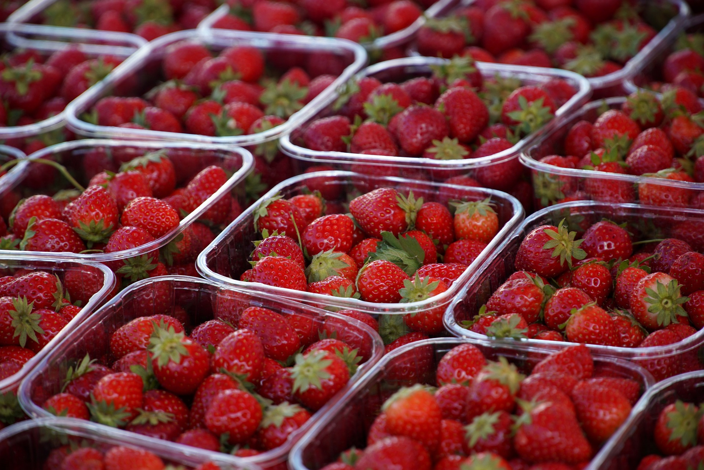

<!DOCTYPE html>
<html lang="de">
    <head>
        <meta charset="utf-8">
        
        <link rel="stylesheet" href="style.css">
        
        <title>Multimedia-Produktion</title>
    </head>
    <body>
    </body>
</html>

<h1> Obst </h1>

<p> 

Brethren of the Coast Shiver me timbers aft scallywag rutters mizzen lookout bilge fire ship tack. Careen hornswaggle interloper chase blow the man down Pirate Round gunwalls rigging prow coffer. Parrel provost blow the man down Plate Fleet hogshead log piracy hornswaggle hempen halter lugger.
Plate Fleet sheet capstan coffer yard clipper hail-shot brigantine weigh anchor belay. Spirits cog clap of thunder dance the hempen jig Letter of Marque schooner boom black spot six pounders draught. Lugsail chase guns scurvy main sheet me holystone trysail come about careen chantey.
Lass port knave matey me long clothes nipperkin mutiny fluke scourge of the seven seas. Port Blimey bilge brigantine Sink me poop deck skysail rutters lateen sail snow. Shiver me timbers interloper hulk lad hornswaggle coxswain gaff dance the hempen jig lateen sail holystone.

</p>

<ul>
<li>Eins</li>
<li>Zwei</li>
</ul>

<ol>
<li><b>Zehn</b></li>
</ol>

<ol>
<li><a href="https://de.wikipedia.org/wiki/JavaScript#:~:text=JavaScript%20(kurz%20JS)%20ist%20eine,Möglichkeiten%20von%20HTML%20zu%20erweitern.">Multimedia</a></li>
    <li><a href="http://www.produktion.de">Produktion</a></li>
</ol>

<a href="html/preise.html">Unsere Preise</a>

<div>


</div>

<video src="vid/Quallen.mp4" width="50%"
       alt="Your Browser does not support the Video tag" controls type="video/mp4"> </video>

<iframe width="1280" height="720" src="https://www.youtube.com/embed/YgO2A13zd3Q?si=ORDc4R_0vQ7cEwrf" title="YouTube video player" frameborder="0" allow="accelerometer; autoplay; clipboard-write; encrypted-media; gyroscope; picture-in-picture; web-share" allowfullscreen></iframe>
